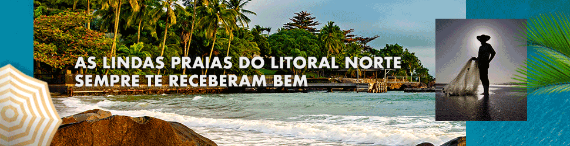

A dura resposta da União Europeia ao discurso de Lula sobre a guerra
'Não é verdade que a União Europeia e os Estados Unidos estão ajudando a prolongar o conflito', disse o porta-voz da Comissão Europeia, Peter Stano.

Depois de Lula tratar de forma equivalente as responsabilidades de Rússia e Ucrânia na guerra, coube ao porta-voz da Comissão Europeia, Peter Stano, rebater as declarações do petista, que ainda responsabilizou os Estados Unidos e os países europeus por prolongarem o conflito na Ucrânia.
“Em referência às falas do presidente brasileiro, gostaria de lembrar alguns fatos básicos. O fato número 1 é que é a Rússia — e apenas a Rússia — a responsável pela agressão ilegítima e não provocada contra a Ucrânia. Então, não há dúvidas sobre quem é o agressor e quem é a vítima. A Rússia está matando civis ucranianos, destruindo infraestrutura civil ucraniana. A Rússia está sequestrando criança ucranianas, a Rússia está roubando propriedades e territórios ucranianos, e os Estados Unidos e a União Europeia juntamente com outros países internacionais, o que estamos fazendo? Estamos ajudando a ajudando a Ucrânia a exercer seu legítimo direito de autodefesa”, disse Stano.

O europeu seguiu analisando contradições na fala de Lula, tratando russos e ucranianos da mesma forma, em relação às posições do país no Conselho de Segurança da ONU. “A Rússia está violando a Carta da ONU, isso é reconhecido pelo Brasil também. O Brasil votou junto com mais de 140 países na ONU para condenar a agressão russa e apelar pelo seu fim, e exortar a Rússia a retirar os seus soldados de todo o território da Ucrânia e suas fronteiras reconhecidas internacionalmente. Isso também foi repetido na declaração do G20 de Bali, o Brasil é um membro”, disse Stano.
“Não é verdade que a União Europeia e os Estados Unidos estão ajudando a prolongar o conflito. A verdade é que a Ucrânia é vítima de uma agressão ilegal em violação da carta da ONU. verdade que a União Europeia, os Estados Unidos e outros parceiros internacionais estão apoiando a Ucrânia na sua legítima defesa. Caso contrário, a Ucrânia enfrentaria a destruição. A nação ucraniana e a Ucrânia como país seriam destruídos porque estes são os objetivos declarados da guerra de Putin”, disse Stano.